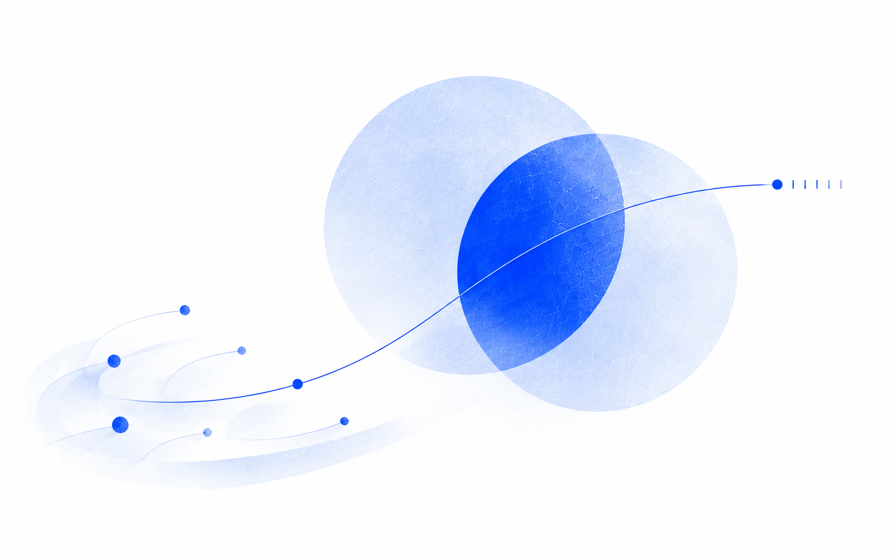

01 / AI & the era
I tried to distill myself into AI — and only partly succeeded.
What can be structured and written out for AI is only the standard spec; the most valuable judgment can't be distilled.

THINKING / FROM PRACTICE
From choices in the AI era, to judgment on complex products, to ways of leading teams and hiring — each piece starts from real experience and gives my judgment and the conditions under which it holds.
01 / AI & the era
What can be structured and written out for AI is only the standard spec; the most valuable judgment can't be distilled.
02 / AI & the era
Workflows were an intermediate while models couldn't plan; now that layer is expiring. What gets absorbed is execution; what can't be taken over is judgment.
03 / Product & judgment
Engineering-infrastructure complexity has two sources: the technical system behind the pages, and the people who use it. Design can't eliminate complexity — only organize it into order on the page.
04 / Team & methods
As a dotted-line lead serving Infra, I grew the team from 1 to 5. This is about the methods I used in that period.
05 / Team & methods
I've done 150 campus and experienced-hire interviews, and mentored every new member of the Infra design team. What's worth asking isn't what they've done, but how they work.

06 / Team & methods
Design judgment can't rely on feeling alone. User research, experience measurement, and the early-stage method give it a basis.